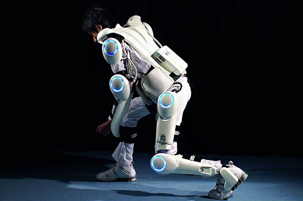
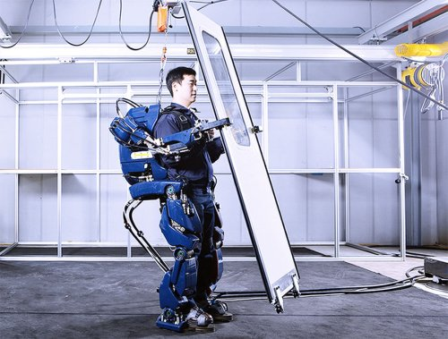

| Главная | Модели |
|  |
Японцы, чья
поп-культура просто пронизана всевозможными гаджетами и робототехникой, в конце
прошлого десятилетия активно приступили к разработкам своего экзоскелета. И
первый костюм, представленный ими, получил название «HAL». Он был разработан
фирмой Cyberdyne и, в отличие от американского «XOS», считывает сигналы с кожи
человека при помощи сенсоров, отправляет их в компьютер, который уже
определяет, какие сервоприводы активировать. «HAL» легче американского аналога
и питается от подвешенного на поясе аккумулятора на 100 вольт, но физическую
силу он увеличивает всего в пять раз. |
|  |
Компания Hyundai
продемонстрировала вниманию общественности новый опытный образец экзоскелета
тяжелого класса, который можно назвать термином "одеваемый робот". Этот
экзоскелет, весьма похожий на то, что многим из нас доводилось видеть в
нескольких научно-фантастических фильмах, дает человеку
"нечеловеческую" силу и способность поднимать грузы, весом в
сотни килограмм, и его можно будет использовать в области промышленного
производства, в военном деле и в медицине для процедур восстановления
физического состояния человека. |